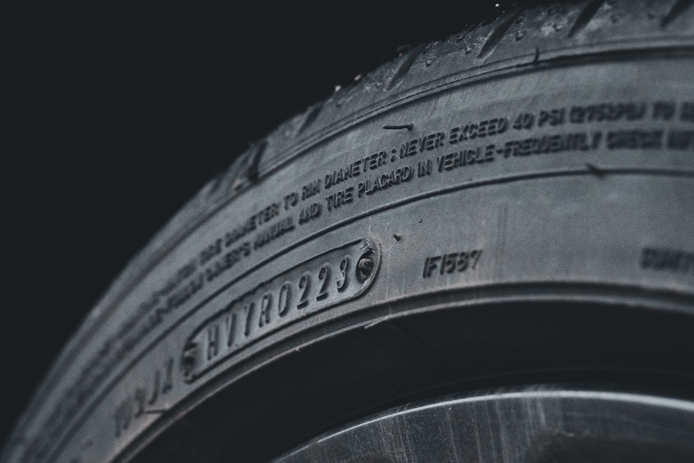

Tire Tread Depth Guide: The Penny Test & Legal Limits

Your tires are the only parts of your car designed to maintain direct contact with the road. Their tread grooves help channel water away from the contact area, supporting traction in rain and other challenging conditions.
As tires wear down, their ability to handle wet roads can decrease. That is why checking tread depth is an important part of regular vehicle maintenance. A tire can look acceptable at a glance but still have insufficient tread or uneven wear.
This guide explains how tire tread depth is measured, how to perform the penny test, what common measurements mean, and when tires should be replaced.
What Is Tire Tread Depth?
Tire tread depth is the distance from the top of the tire's tread blocks to the bottom of its main grooves. It is usually measured in 32nds of an inch in the United States or in millimeters in many other countries.
New passenger-car tires commonly have approximately 10/32 to 11/32 inch of tread, although the starting depth varies by tire model and purpose. Some performance, all-terrain, winter, and specialty tires have different tread designs and depths.
Tread depth is only one part of tire condition. Age, cracks, bulges, punctures, sidewall damage, and uneven wear can also mean a tire needs professional inspection or replacement.
Tire Tread Depth Chart
The chart below provides general guidance for common passenger-car tire tread measurements. It is not a substitute for the tire manufacturer's recommendations or applicable local regulations.
| Tread Depth | General Condition | Recommended Action |
|---|---|---|
| 10/32–11/32 inch | Common depth for many new tires | Maintain tire pressure and inspect regularly |
| 8/32 inch | Good remaining tread on many tires | Continue routine checks |
| 6/32 inch | Moderate wear | Monitor wear, especially before winter or wet-weather driving |
| 4/32 inch | Reduced tread depth | Consider replacement, particularly for frequent wet-road driving |
| 3/32 inch | Low tread depth | Plan replacement soon and inspect carefully |
| 2/32 inch | Common minimum replacement threshold | Replace the tire; do not rely on the legal minimum as a safety target |
Tire performance in rain and snow can deteriorate well before tread reaches 2/32 inch. Drivers who regularly encounter heavy rain, snow, or icy conditions should consider tire performance and seasonal requirements when deciding when to replace tires.
How to Do the Penny Test
The penny test is a simple way to screen for very low tread depth on tires used in the United States. It does not provide an exact measurement, and a tread depth gauge is a better tool when you need a precise reading.
Step 1: Find a Penny
Use a U.S. penny featuring Abraham Lincoln's head. Make sure the tire is stationary and the vehicle is parked safely before checking the tread.
Step 2: Insert the Coin Into a Tread Groove
Place the penny into one of the main grooves with Lincoln's head pointing downward. Do not insert it into a shallow decorative groove or a tire wear indicator.
Step 3: Look at the Top of Lincoln's Head
If the tread covers part of Lincoln's head, the tire may have more than approximately 2/32 inch of tread at that spot. If the top of his head is fully visible, the tire may be at or below that common replacement threshold.
Step 4: Check Several Locations
Repeat the test in several grooves across the width of each tire. Uneven results may reveal irregular wear. If any section looks significantly more worn than the rest, have the tire inspected.
The penny test is only a rough screening method. It cannot identify every tire defect, confirm exact tread depth, or establish whether a tire is safe in all weather conditions.
How to Measure Tire Tread Depth Accurately
A tread depth gauge is a more reliable way to measure tire wear than a coin. These gauges are inexpensive and commonly available at automotive parts stores.
1. Park on a Level Surface
Park the vehicle safely, switch off the engine, and make sure the tires are stationary. Avoid checking tread while the vehicle is moving or while someone is working around the wheels.
2. Place the Gauge in a Main Groove
Follow the gauge manufacturer's instructions. Position the measuring probe in a main tread groove, avoiding tread wear indicators, stones, and other debris that could affect the reading.
3. Check Across the Tire
Take readings in several places across the inner, center, and outer tread areas where accessible. Different readings may indicate uneven wear, which can result from inflation issues, alignment problems, worn suspension components, or other causes.
4. Inspect All Four Tires
Check each tire rather than assuming they have worn at the same rate. Front and rear tires may wear differently, and some vehicles have different tire sizes or wear patterns between axles.
If you cannot safely reach a section of the tire, or if wear appears uneven or severe, have a tire professional inspect it.
What Are Tire Wear Bars?
Most passenger tires have built-in tread wear indicator bars inside the main grooves. These small raised sections provide a visual reference for when tread has worn down to a specified level.
When the tread surface becomes level with the wear indicators, the tire has reached its wear limit at those locations and should be replaced. Do not wait for every part of the tire to become smooth before taking action.
Wear bars are useful, but they do not replace a full tire inspection. Damage, age-related deterioration, or uneven wear can make a tire unsuitable for use even when some tread remains.
Why Tire Tread Depth Matters in Rain
Tire grooves help move water away from the contact patch between the tire and road. As tread becomes shallower, a tire generally has less ability to manage water at speed, increasing the risk of losing traction on wet roads.
Hydroplaning can occur when a layer of water prevents the tire from maintaining adequate contact with the road. Speed, water depth, tire condition, inflation pressure, and road surface all influence the risk.
If roads are wet, reduce speed, increase following distance, and avoid sudden steering or braking inputs. Good tread depth helps, but it cannot eliminate every wet-weather hazard.
Is 4/32 Inch of Tread Enough?
Four thirty-seconds of an inch is above the common 2/32-inch replacement threshold, but that does not mean every tire with 4/32 inch is ideal for every condition.
Drivers who frequently encounter rain may want to consider replacement before the tire reaches the minimum threshold. Winter driving can require additional tread depth and appropriate winter-rated tires, depending on local conditions and regulations.
Use the vehicle and tire manufacturers' guidance, account for the conditions you drive in, and do not rely solely on a legal minimum to determine whether a tire is suitable for your needs.
Tire Tread Depth Legal Limits in the United States
A tread depth of 2/32 inch is commonly referenced as the minimum replacement threshold for passenger-car tires in the United States. However, legal requirements can depend on the jurisdiction, vehicle category, and applicable inspection rules.
Commercial vehicles and certain vehicle types may be subject to different requirements. If you need to know whether a specific tire meets legal requirements, check the rules that apply in your state and vehicle category.
A tire may also be unsafe because of a bulge, exposed cords, a deep cut, or other damage even if its tread depth is above a stated minimum. Do not treat a legal threshold as a guarantee of safety.
Other Signs Your Tires May Need Replacing
Tread depth is important, but it is not the only reason to replace a tire. Inspect your tires for these warning signs:
- Bulges or bubbles in the sidewall.
- Deep cuts, cracks, or visible cords.
- Repeated loss of air pressure.
- Uneven wear across the tread.
- Vibration or handling changes that may be tire-related.
- Age-related cracking or other visible deterioration.
- Tread worn down to the built-in wear indicators.
A tire with a sidewall bulge, exposed cords, or serious structural damage should be inspected promptly and generally should not be driven on. If you suspect a dangerous tire defect, arrange professional assistance rather than taking unnecessary risks.
Frequently Asked Questions
What is the minimum tire tread depth in the USA?
Two thirty-seconds of an inch is a commonly used replacement threshold for passenger-car tires, but applicable legal requirements can vary. Tires may need replacement earlier because of wet-weather performance, damage, age, or uneven wear.
How do you do the penny test on tires?
Insert a U.S. penny into a main tread groove with Abraham Lincoln's head pointing downward. If the top of his head is fully visible, the tread may be around 2/32 inch or less at that spot. Use a tread depth gauge for a more accurate measurement.
Is 4/32 inch of tire tread safe?
Four thirty-seconds of an inch is above the common 2/32-inch replacement threshold, but wet-weather and winter performance can decline as tread wears. Consider your driving conditions and the tire manufacturer's guidance when deciding whether to replace your tires.
How deep is the tread on a new tire?
Many new passenger-car tires have around 10/32 to 11/32 inch of tread, but the exact depth depends on the tire model and design. Check the manufacturer's specifications for your specific tire.
Can tires pass the penny test and still be unsafe?
Yes. The penny test only gives a rough indication of tread depth. Bulges, cracks, exposed cords, punctures, age-related deterioration, and uneven wear can make a tire unsafe even if some tread remains.
How often should I check tire tread depth?
Check tire condition regularly, including during routine maintenance and before long trips. Measure tread depth at several points and inspect sooner if you notice uneven wear, pressure loss, vibration, or visible damage.
Should all four tires have the same tread depth?
Similar tread depth is often desirable, but acceptable differences depend on the vehicle, drivetrain, and tire manufacturer's requirements. Some all-wheel-drive systems are particularly sensitive to differences in tire circumference, so consult your owner's manual before replacing only one or two tires.